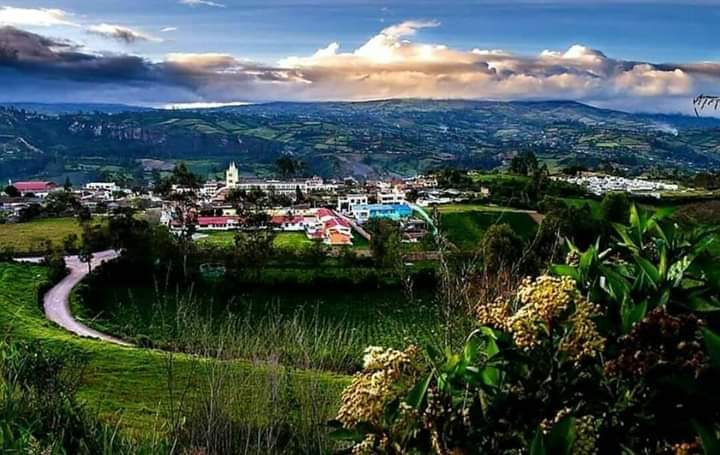
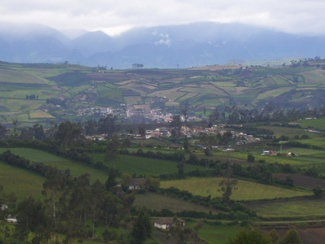

OSPINA
-
SU HISTORIA Y RESEÑA HISTORICA
Fecha de fundación: 01 de octubre de 1664
Nombre del/los fundador (es):María Mués Calcan
Reseña histórica:
Reseña Histórica La población e fundada en el año de 1664 por la Cacica María Mués Calcan, con el nombre de CALCAN, adquirido del segundo apellido de la cacica, quien se distinguió por imponer la paz, el trabajo y el progreso en sus dominios.
Ospina hasta el año de 1865 perteneció como un corregimiento del Municipio de Sapuyes, año en el cual por ordenanza No.50 de la ciudad de Túquerres fue elegido como Distrito dándole el nombre que lleva en la actualidad, en recuerdo del Doctor Mariano Ospina Rodríguez.
Sobre el río Sapuyes se construyó un puente que en realidad es una obra de arte en esta clase de trabajos donde se encuentra ubicada una placa conmemorando el nombre de María Ester del Hierro de Caviedes Arteaga, cuyo esposo efectuó la obra y el afirmado del ramal que se encontraba abandonado. -
Como es?
Ospina es uno de los municipios que conforma el departamento de Nariño, este municipio se encuentra al sureste del país. Limites Hacia el norte, con los municipio de Imués y Túquerres, hacia el sur con el municipio de Iles, por el occidente con el municipio de Sapuyes y por el oriente con los municipio de Imués e Iles. La distancia de referencia con la capital departamental es de 11 kilómetros. Ospina se caracteriza por sus festividades y su clima cálido.

Conociendo OSPINA
PÁRAMO PAJA BLANCA
El Parque Natural Regional Páramo de Paja Blanca tiene una extensión de 3.107 hectáreas. De él nacen 13 micro cuencas y abundantes fuentes que abastecen a 36 acueductos veredales y seis cabeceras de los siete municipios del área de influencia.